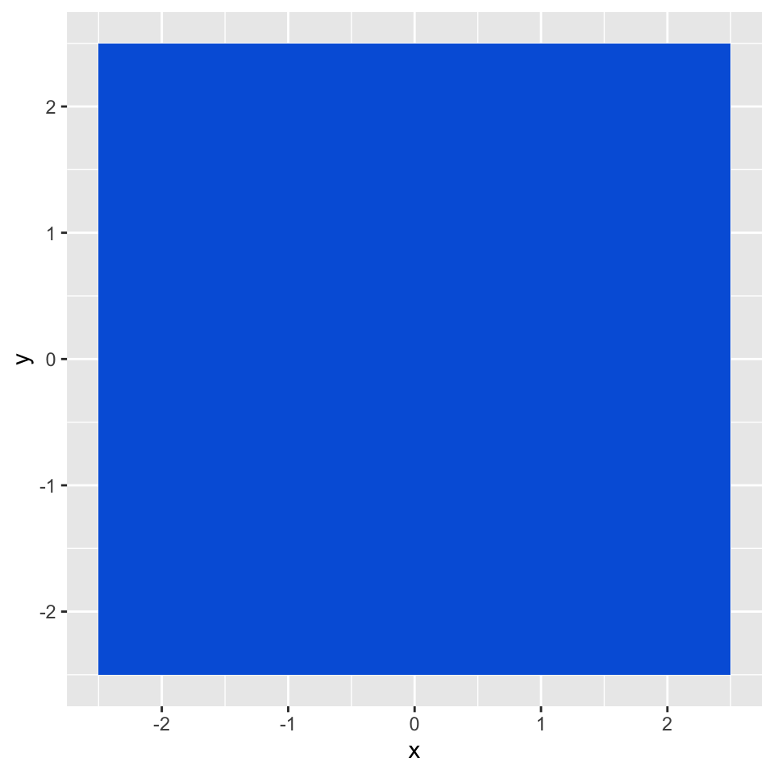

install.packages('ggplot2')
library("ggplot2")Creating the favicon for this website with ggplot2
We will use the package to create an image and export it in several sizes. It is not as straightforward as I thought.
R
website
Favicon – what is it?
Quoting from Mozilla’s documentation:
A favicon (favorite icon) is a tiny icon included along with a website, which is displayed in places like the browser’s address bar, page tabs and bookmarks menu.
[…]
They are used to improve user experience and enforce brand consistency. When a familiar icon is seen in the browser’s address bar, for example, it helps users know they are in the right place.
What kind of graphic am I trying to create?
I’m trying to re-create the favicon used for a previous iteration of my personal website:
- Square shape
- Solid blue background color
- My initials “GT” positioned on top, towards the bottom of the square.
I’m starting simple. Should be doable, right?
Setup
Installing and loading ggplot2.
Here, I set the default size of my plots for the rest of the document. It is an important setting since I will generate a square icon and, by default, dimensions are 7 x 5 inches.
knitr::opts_chunk$set(
fig.width = 5,
fig.height = 5
)Creating the graphic
I decided to tackle the blue background first. I remembered that ggplot has different geoms to create a square. I looked up the documentation and started coding.
I iterated through geom_raster(), geom_rect() and landed on geom_tile(). It is best suited for my use case. I just need to define the size of the square and use the origin (0,0) as the center of the square.
square_size <- 5
my_blue <- "#0063dc"
(p <- ggplot() +
geom_tile(
aes(x = 0, y = 0, width = square_size, height = square_size),
fill = my_blue
))
Now, I will 1) add the text, position it, and then 2) remove all plot elements like grid lines, axes, etc.
(p <- p +
geom_text(
aes(
x = 0,
y = -square_size / 5,
label = "GT",
family = "Inter",
fontface = "bold"
),
color = "white",
size = square_size / 2,
size.unit = 'in'
) +
theme(rect = element_rect(fill = "transparent")) +
theme_void()
)Voilà!
On purpose, I defined the position of the text and its size as a factor of the variable square_size. I hope that it will make it easier to export this graphic in different sizes after.
Regarding the font, I’m using Inter. I had to download and install it on Mac OS for it to become available in the plot.
Saving in various sizes and formats
This is when things get more complicated for two reasons:
- No clear spec for favicons exists. It depends on browsers, mobile OSes. Different formats, different sizes.
- Resizing a plot is not as straightforward as I thought
Favicon specs
While browsing, I found various specs1 for this favicon. I will spare you the details. In the end, I landed on the following:
favicon.ico32x32 (px)favicon.png96x96 (px)apple-touch-icon.png180x180 (px)favicon.svg
Scaling issues
So far, I’ve set all my measurements in inches (figure size, font size). Now, my goal is to provide a size in pixels and to automatically resize and scale the icon accordingly.
The problem is…
ggsave(
p,
filename = "icons/favicon_problem.png",
dpi = 'retina', #retina = 320, according to documentation
width = 96,
height = 96,
units = 'px',
bg = "transparent"
)
… that the dimensions are good, but the proportions are not. With ggsave I can easily define the size in pixels, but this doesn’t change the font size in the plot.
Christophe Nicault’s article Understanding text size and resolution in ggplot2 explains very well what happens. They recommend to use a package called ragg and the scaling option.
I tried, but simply installing ragg created a big error2 in Quarto and completely destroyed my ability to preview my post. I also played around with the scale option in ggsave(), to no avail.
As a result, I decided to handle the scaling myself.
DIY scaling
Since I’ve defined sizes in inches when creating the graphic and since I want to express icon dimensions in pixels, I need to understand the relationship between inches and pixels first.
From Understanding text size and resolution in ggplot2:
The relation is : (size in inches) = (screen size in pixel) / PPI or (screen size in pixel) = DPI * (size in inches)
In other words, if I want an icon with size 32 x 32 pixels, the conversion in inches will be 32 / 320 = 0.1 (with a resolution of 320). I can create a function that takes these two parameters as arguments, converts that to a measurement in inches and then passes that to ggplot2.
# Function that creates the icon with sizes in inches
create_icon <- function(square_size_inches) {
p <- ggplot() +
geom_tile(
aes(
x = 0,
y = 0,
width = square_size_inches,
height = square_size_inches
),
fill = my_blue
) +
geom_text(
aes(
x = 0,
y = -square_size_inches / 5,
label = "GT",
family = "Inter",
fontface = "bold"
),
color = "white",
size = square_size_inches / 2,
size.unit = 'in'
) +
theme(
plot.background = element_rect(fill="transparent", colour = NA_character_),
panel.background = element_rect(fill="transparent", colour = NA_character_)
) +
theme_void()
return(p)
}
# Function that uses a size in pixels and a dpi to convert it into inches, create the icon and save it to disk
create_and_save_icon <- function(filename, size_pixels, dpi = 320) {
square_size_inches <- size_pixels / dpi
icon <- create_icon(square_size_inches)
ggsave(
plot = icon,
filename = filename,
dpi = dpi,
width = size_pixels,
height = size_pixels,
units = 'px',
bg = "transparent"
)
}Let’s try it out!
create_and_save_icon(filename = 'icons/favicon_32x32.png', size_pixels = 32, dpi = 320)
It works! I can now generate the different sizes that I need.
sizes = c(32, 96, 180)
for (size in sizes) {
filename = paste0('icons/favicon_', size, 'x', size, '.png')
create_and_save_icon(filename = filename, size_pixels = size, dpi = 320)
}
And for the last one, the .svg version. Here, we’ll use the base R built-in SVG graphics device:
icon <- create_icon(1)
svg("icons/favicon.svg", width = 1, height = 1)
print(icon)
invisible(dev.off())Footnotes
Most complete article that I could find: RealFaviconGenerator’s Understanding favicon elements.↩︎
quarto previewwould throw asegfaulterror that I was not able to resolve.↩︎